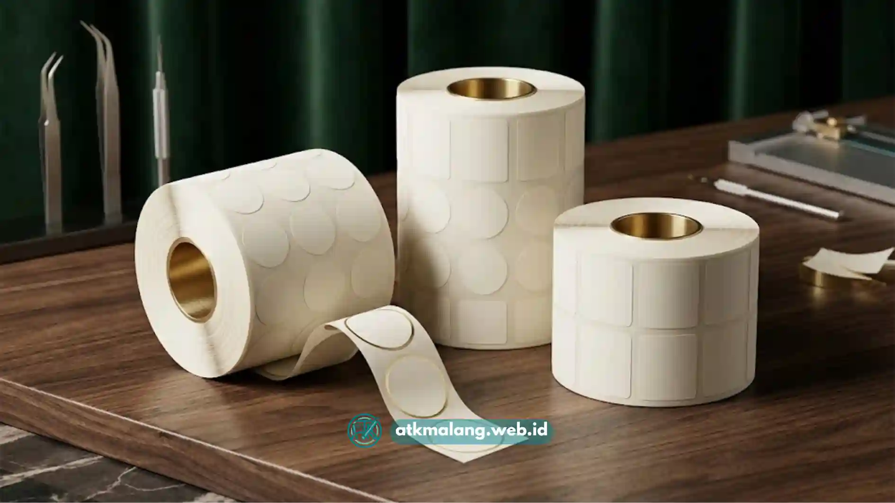

Distributor grosir kertas sticker Malang yang tepat umumnya menawarkan harga bersaing karena membeli langsung dari pabrik, disertai jaminan presisi potong dan daya rekat kuat yang konsisten pada setiap batch pengiriman.
- Harga grosir yang lebih murah biasanya berasal dari pembelian langsung dari pabrik tanpa banyak perantara.
- Presisi potong penting agar kertas sticker tidak melenceng saat digunakan pada mesin cetak atau label otomatis.
- Daya rekat yang konsisten mengurangi risiko label terkelupas setelah produk didistribusikan.
- Lokasi distributor di Malang memudahkan pengiriman lebih cepat untuk pelaku usaha di Jawa Timur.
- Ketersediaan stok yang stabil penting bagi bisnis yang mencetak label secara rutin dalam jumlah besar.
Daftar Isi
Apa yang Membuat Harga Grosir Kertas Sticker di Malang Bisa Lebih Murah?
Harga grosir kertas sticker umumnya lebih murah karena pembelian dilakukan dalam jumlah besar langsung dari pabrik atau distributor utama, sehingga margin per lembar kertas menjadi lebih kecil.
Selain volume pembelian, faktor lain yang memengaruhi adalah jarak pengiriman, di mana wilayah Malang dan sekitarnya umumnya memiliki biaya logistik yang lebih efisien dibanding pengiriman antar pulau.
Jenis dan ketebalan kertas juga menentukan harga, misalnya kertas HVS umumnya lebih terjangkau dibanding chromo yang berlapis glossy.
Frekuensi pemesanan turut berperan; pelanggan yang memesan secara rutin biasanya mendapatkan penawaran harga yang lebih stabil dari pihak Alat Tulis Kantor.
Metode pembayaran dan sistem kerja sama jangka panjang dengan distributor juga sering memberikan potongan harga tambahan.
Bagi pelaku usaha percetakan atau kemasan di wilayah Malang, membandingkan penawaran dari beberapa distributor sangat membantu mendapatkan harga paling sesuai dengan kebutuhan produksi.
Apa Ciri Kertas Sticker dengan Presisi Potong yang Baik?
Kertas sticker dengan presisi potong yang baik memiliki ukuran yang konsisten di setiap lembar atau roll, tanpa selisih ukuran yang dapat mengganggu proses cetak otomatis.
Presisi potong menjadi sangat penting terutama bagi bisnis yang menggunakan mesin cetak label otomatis atau semi-otomatis untuk memproduksi stiker dalam kecepatan tinggi.
Ukuran kertas yang tidak presisi dapat menyebabkan label bergeser, terpotong tidak rapi, atau bahkan menyebabkan mesin macet saat proses produksi berlangsung.
Indikator kertas sticker presisi baik meliputi: tepi kertas rata tidak bergerigi, ukuran antar lembar konsisten, dan roll kertas tergulung rapi tanpa bagian miring atau kusut.
Tidak ada sisa serat kertas yang menempel di tepi potongan yang berisiko mengotori mesin cetak atau hasil akhir produk.
Distributor yang memperhatikan kualitas produksi umumnya dapat menjaga konsistensi presisi potong ini di setiap batch, sehingga variasi kualitas antar pembelian dapat ditekan.

Kertas sticker presisi potong mencegah kesalahan pencetakan mesin label otomatis.Mengapa Daya Rekat Kertas Sticker Menjadi Faktor Penting dalam Pembelian Grosir?
Daya rekat yang kuat dan konsisten memastikan label tetap menempel pada kemasan produk selama proses distribusi, penyimpanan, hingga sampai ke tangan konsumen akhir.
Dalam pembelian grosir, konsistensi daya rekat menjadi lebih krusial dibanding pembelian satuan, karena satu batch kertas yang bermasalah dapat memengaruhi ribuan produk sekaligus.
Beberapa hal yang perlu diperhatikan terkait daya rekat antara lain jenis perekat yang digunakan, apakah cocok untuk permukaan plastik, kaca, atau kardus kemasan.
Ketahanan perekat terhadap suhu ruangan maupun kondisi penyimpanan gudang yang lembab sangat menentukan usia stiker.
Kemudahan aplikasi label tanpa meninggalkan residu perekat yang berlebihan serta konsistensi kekuatan rekat di seluruh permukaan kertas merupakan faktor penentu kepuasan pelanggan.
Sebelum membeli grosir pada toko peralatan atau kertas cetak grosir, disarankan meminta sampel kertas sticker untuk diuji coba langsung pada kemasan produk.
Bagaimana Cara Memilih Distributor Grosir Kertas Sticker yang Tepat di Malang?
Memilih distributor grosir kertas sticker yang tepat di Malang sebaiknya mempertimbangkan konsistensi kualitas produk, kejelasan harga, serta kemampuan memenuhi kebutuhan stok berkelanjutan.
Pertimbangkan ketersediaan sampel produk dari distributor sebelum memutuskan melakukan pembelian jangka panjang dan meneken kontrak kerja sama.
Kejelasan informasi terkait jenis kertas, ketebalan, dan jenis perekat yang ditawarkan adalah bentuk transparansi dari distributor yang terpercaya.
Selain itu, kemampuan distributor dalam menjaga stok pemesanan berulang dan lokasi gudang yang strategis di Malang mempercepat proses distribusi material percetakan Anda.
Rekam jejak pengalaman distributor dalam melayani pelanggan skala percetakan maupun UMKM sering menjadi indikator kompetensi pelayanan yang bisa diandalkan.
Memilih distributor yang tepat tidak cukup hanya berdasarkan harga termurah, tetapi juga perlu mempertimbangkan presisi potong dan daya rekat yang konsisten.
Meminta sampel produk dan membandingkan beberapa distributor pada tempat Alat Tulis Kantor sebelum melakukan pembelian dalam jumlah besar adalah langkah bijak.
Dengan memilih pemasok yang tepat, pelaku usaha percetakan dan kemasan di wilayah Malang dapat menjaga efisiensi biaya produksi tanpa mengorbankan kualitas hasil akhir label.
Pilih partner bisnis terbaik agar operasional percetakan produk Anda senantiasa berjalan mulus dan minim masalah teknis karena kualitas bahan baku.